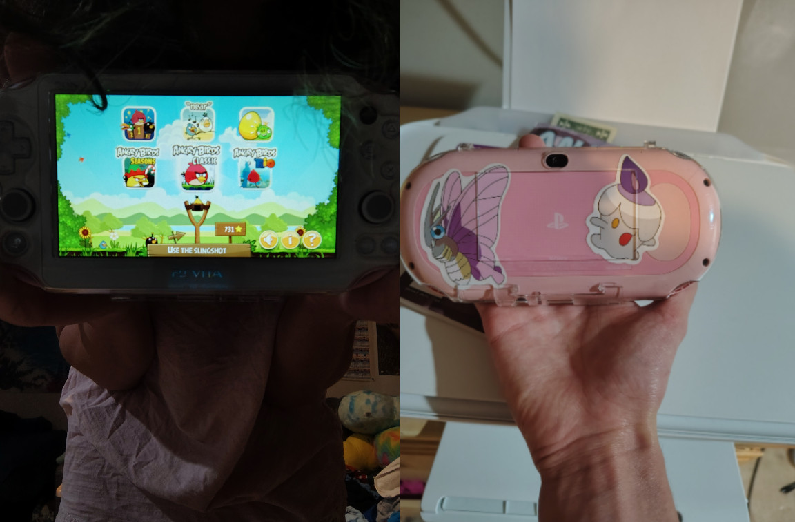

I forgot about how formative angry birds was for me growing up I played all the games and I watched all of the offical animations too I had little plushies and I have no idea where they are but they are probably gone now ive had my PS vita for a while and I was pretty suprised to find a version of angry birds for it ive been glued to it all week and to compound the whole thing 2 of the games in angry birds trilogy have been delisted for years! so I am litearaly playing one of the only legitimate versions of angry bird seasons and angry birds rio of course there are APK's but I dont think anyone trusts those to not give their phone a virus I feel like I could have solved world hunger with the time that ive spent playing this game this past week or two it's silly bc I really shouldent be slacking off on my spring break like this still there was a time when I was much younger when this was a special intrest and just playing the game brings me back to that and I wont ever be that passionate about something like that ever again it was the same with pokemon it kinda makes me wish I could reverse my life a little like not age regress that's gross but like reverse some aspects of my maturity to bring back the passion that I used to have when I was a lot younger that would just be nice also I like the embiance on the mine and dine levels it's really nice go listen to it I have it right here
my room has been partialy unfinished for a while and today I was able to put some dry wall up in my closet so that was nice but as nice as it is what I really would like to do is move out some pepole like living with their parents into adult hood but I really dont like it I kind of feel like ive outgrown my house hold my room is just full of stuff I have a bunch of boxes of stuff in my closet that I have stored away bc otherwise I wouldent have enough space in my room I have an automan a couch and my own TV a desk for my PC and I keep acquiring more amenities and still I am living in my parents house in an unfinished room ive never been so ready to move out on top of that I want to have a vegitarian diet and I cant really do that until I move out a lot of pepole have the luxury of going to a university where they can have their own dorm in this span of time in their lifes when they are too young to move out but too old to be comfortable still living with their parents but im only in community collage right now and theres no way im affording rent here without moving in with other pepole but I guess that's pretty normal right know I am just hoping really hard that I can have a future where I can just live with my boyfriend that would be really awesome
I used to really enjoy messing with my website but then it got frustrating and I felt like I had improved it to be as complete as I could make it and ive looked online and bought a text book but I could just never learn the syntax and over time I forgot everything I wish there were better resources out there for learning it but really im also lazy and I cant really absorb the information either I just get sick of things they just bother me and I put stuff down and never pick them up I used to write a lot and I was prretty creative but I couldent turn my ideas into a proffesional looking story so I got frustrated and quit it's anoyying bc hobbies are meant to be fun but anytime I try to have one it just ends up not being that way and I end up quiting it because I cant handle the torment of doing it any longer and im not the kind of person that can be satisfied with TV and video games and youtube those things get boring so a lot of the times I just lie around and do nothing I think maybe I would fix my camrea if I had anything to take a picture of but I never go anywhere and it's just so expensive I would go to the park but I still cant drive sometimes I just feel like im completely out of things to do honestly right now I would go on a walk if I could but of course everywhere is a car and you cant find a side walk anywhere so I have nowhere to go until I get my license